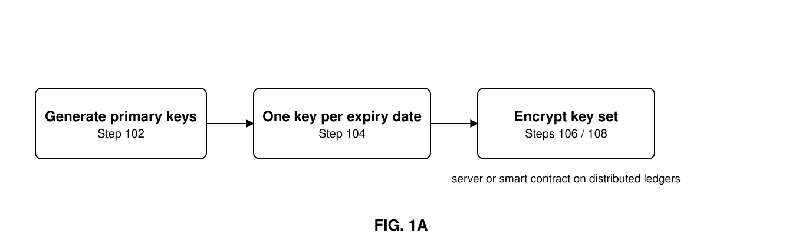
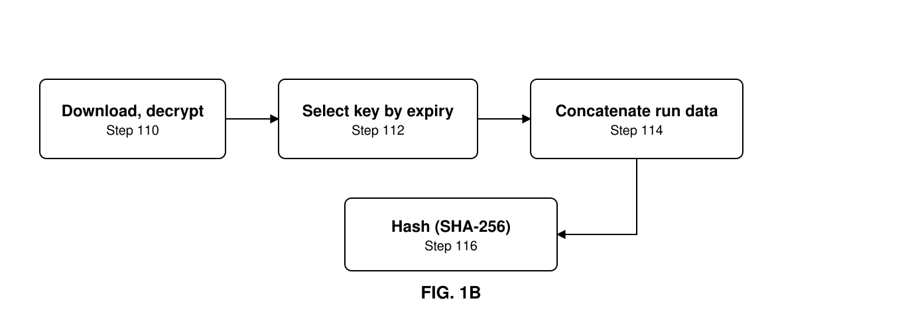
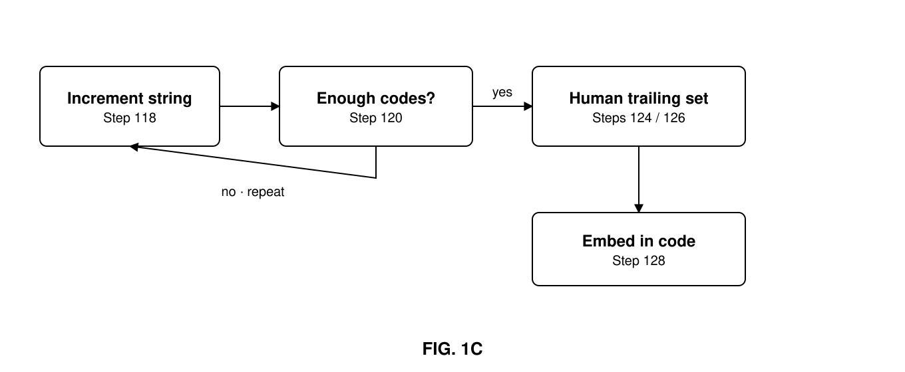
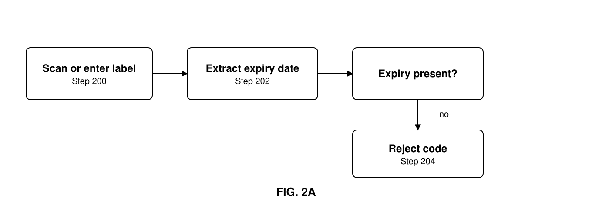
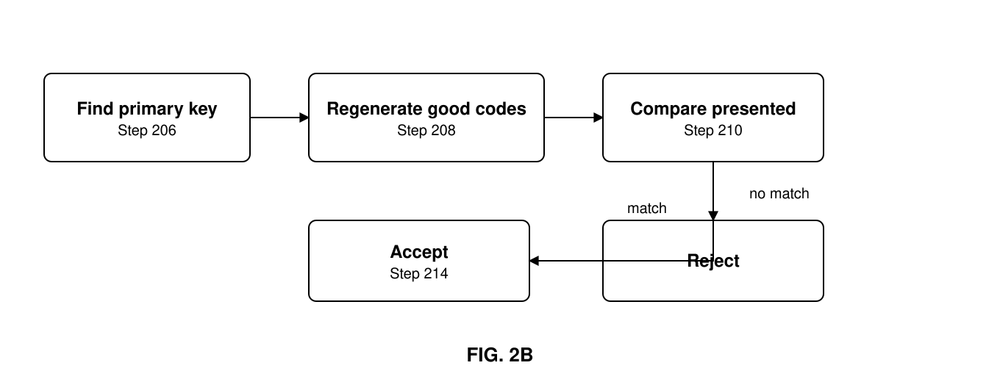

Provisional Patent Claim · 62/704,128Stuart Corby · 23 April 2020
stuartcorby@me.comLicence free — help yourself
Anti-counterfeiting
Protecting in-the-clear inventory labelling with non-collision, unique random serial numbers, in order to prevent forward guessing by bad actors
InventorStuart Corby
Application62/704,128
StatusPublished · licence free
Abstract
In an anti-counterfeit system and method, a set of identification codes are generated from data associated with units from a line of items. Universal labelling standards currently require a product to carry within it an item unit identification (IUID). The IUID contains a series of identifying strings used to ascertain the manufacturer, product type, batch of production, expiration date and a unit serial number that, when concatenated with the batch, allows the identification of one unit from another even if all label and physical attributes are similar to the rest of that batch. Current implementations of IUIDs allow bad actors to forward-predict the IUID of future production runs and label their fake products with concocted IUIDs. Their counterfeit product labels become indistinguishable from genuinely labelled products, because they are using future valid number strings.
In this invention, a non-collision, unique random (NCUR) key replaces the current serial number string. This NCUR key prevents all forward prediction of the IUID. Furthermore, the NCUR key is generated by utilizing the other strings contained in the IUID in combination with uniquely generated but known "genesis" codes. The known string is used to initiate the controlled start of a rolling encryption key. This key is then used to generate the series of NCURs unique to that set of labels.
This invention allows for the remote generation of codes without connection to a controlling server, and further allows for the checking of those codes — again without an immediate connection to a controlling server — as long as both the creating and checking systems have at some point received a synchronized encrypted set of genesis codes in order to start their calculations. The genesis codes can be controlled by a centralized server, or generated in a fully distributed set of ledgers by a smart contract. In either case, commonly understood public-private keys are then used to encrypt the confidential data. Access to the code data is therefore limited through authentication of any third party, such as the creating or checking parties: they must be given the relevant keys in order to use the system, and once they have been granted access to and copied the set of keys, they no longer need to be connected to the internet to ascertain that the NCUR in the label was printed by a genuine party.
Background
Current labelling standards connect something general to something specific along a predefined encoding schema. To understand how these systems connect, propose a set of five alphanumeric character strings — A, B, C, D and E. Think of each character string as representing something important about the item.
String
Data
Example
A
Company identifier
CAGE code
B
SKU (stock keeping unit)
Product or bar code
C
Batch identifier
Lot number
D
Unique identifier
Serial number
E
Expiration date
YYMMDD
Combining string A and string B — concatenation — makes it possible to distinguish between a company's product lines, and to distinguish them from all other unalike items. Through concatenation of C and D it becomes possible to distinguish the item from all other like items. When strings A, B, C and D are combined, all items are fully and universally discoverable and traceable. But these codes are not yet secured against malicious action and counterfeit activity. Here is why:
A and B are constant. That makes it easy for humans to identify parts by the serial number — and equally easy for anyone to recreate the first half of the code.
String C is a batch identifier, so it usually follows a progressive sequence or is based on the production timestamp. Once a sequence is found, it is forward-predictable by date or lot.
String D is most commonly only unique within the batch, i.e. when concatenated with string C. This is a legacy of two obsolete constraints: before digital print heads it was cheaper to repeat a sequence of numbers with a rotating-head printer, and serial number generation programs were designed around that limitation; and before inline scanning tools it was easier to find badly printed labels if they ran sequentially — no longer the case, as production lines have near-zero bad prints and rejection is automated with inline scanners identifying bad labels during both a print run and a production run.
Together these practices make the entire code forward-predictable and unprotectable against counterfeiters and malicious actors. If you replace the unique identifier string D with a non-sequential identifier you can defeat a counterfeiter's attempts to forward-predict the code — but you then need to distribute the identifiers, or allow permanent access to a centralized database or distributed ledger in order to check that the code on the item was truly issued by the company.
However, by utilizing the in-the-clear data in string E in combination with a private but known rolling encryption key, which increments for each code generation, it is possible both to generate a non-collision, non-forward-predictable serial number and to check that number remotely without reference to a centralized database or distributed ledger of codes — as long as you have previously been granted access to, and taken a copy of, the correct initiation keys for the presented expiration date.
This allows future offline confirmation of codes, making this calculation-based invention useful, scalable and unique.
Background of the invention
While the implementation of standards in supply-chain labelling has facilitated the rapid adoption of unique labelling technology and brings benefit to supply-chain visibility, it has also offered malicious actors and counterfeiters the capability of understanding the structure of a label and then forward-predicting future codes, even before manufacturers themselves have issued them. This invention relates to that systemic problem: placing unique, non-collision codes within existing encoding structures and combining that process with well-known electronic encryption processes, to allow the remote verification of any physical item's unique identifier while concurrently preventing a bad actor from forward-predicting future codes in order to generate their own labels for counterfeit product.
Summary of the disclosure
Certain embodiments of the present invention allow for the replacement of the unique identifier string — commonly known as the serial number product identifier — within industry-standard labelling schemas, with a derived number that is a non-collision, random, unique-based identifier. This new serial number can be calculated remotely by an informed but only intermittently connected device.
The device receives standard labelling data electronically, visually, or by physical entry of the data. It then extracts and unbundles that item's strings, adds a secret key chosen on the basis of the product's expiration date, and combines the secret key with a short incrementable second string. This combined string is hashed, using a known hash such as SHA-256, to generate the first serial number for this batch of product. The short string is then incremented and the hashing process repeated, in order to generate enough codes to label all product with that expiration date. These are then used as the serial numbers on any printed label, or for electronic identification tags such as RFID or NFC.
In addition, a second short incremental value can be added as the trailing set of digits of the hashed serial number, to provide a quick reference for humans reading the code — allowing activities such as manual quality control within print runs to be conducted without change to current practice. This trailing code can be numeric, alphanumeric or alphabetical only, and can be of varying length.
This process of acceptable code generation can be replicated by a checking party whose own device has previously been granted access to, and has received, the secret key for that expiration date. This allows confirmation of a good manufacturing code without the need for constant calls to a remote server, and without needing to maintain a list of all issued serial numbers on the scanning device or system.
Brief description of the drawings
Figures 1A, 1B and 1C show a flow chart of the production side of one embodiment of an anti-counterfeiting system in accordance with the invention.
Figures 2A and 2B are a flow chart showing the checking side of one embodiment of an anti-counterfeiting system in accordance with the invention.
Like reference numbers and designations in the various drawings indicate like elements.

Fig. 1A — Key generation and encryption

Fig. 1B — Key selection, concatenation and hashing

Fig. 1C — Iteration and embedding in the standard code

Fig. 2A — Reading the label and extracting the expiry

Fig. 2B — Regenerating and comparing candidate codes
Detailed description — production side
Figures 1A, 1B and 1C show the production side of one embodiment. For the sake of brevity it is assumed that all communications are properly encrypted and protected from third-party interception using standard encryption technologies.
102 · 104
Generate a set of primary keys, each associated with its own possible future expiration date.
106 · 108
Encrypt the set of primary keys using public/private key or similar techniques, by a computer system or by executable code running on a distributed set of ledgers.
110
The encrypted primary expiration-date keys are downloaded, or accessed from a distributed ledger, and decrypted within an executable that maintains their secrecy.
112 · 114
Based on the required expiration date, the executable selects the appropriate primary key and concatenates it with the production run information — manufacturer identity, product line, batch, any other metadata destined for the final label — plus an initial variable string that increments as each new serial number is generated.
116
The string set is generated by applying a suitable hash function — any algorithm or subroutine mapping large data sets of variable length to smaller data sets of fixed length.
118 · 120 · 122
The executable increments the variable string and repeats the process until there are enough codes for the day's production.
124 · 126
If the delivered codes need to be read in order of production by a human, a second incremental alphabetic or numeric string of appropriate length is added as a trailing set.
128
The new non-collision, unique random serial number is embedded in place of the standard item serial number within industry-standard codes — company ID, product ID, NCUR serial number, batch or lot number, expiration date. The set of complete codes is then released for use as a physical or electronic label.
Detailed description — checking side
Figures 2A, 2B and 2C show the checking side of one embodiment.
200 · 202
A physical or electronic label is scanned by an authorized device, or the data is entered into it by an authorized user. The data is analyzed and the expiration date extracted.
204 · 206
If there is no expiration date, the code is rejected. If the expiration date is valid, the associated primary key is found from a previously downloaded set of master keys.
208 · 210
The primary key, the production run information taken from the label, and each of the rolling incremental strings are used to create a full set of possible good codes. The presented NCUR serial number is compared to that locally generated set.
214
If the presented code is absent it is rejected; if present, it is accepted. In either case the device can be set to inform the user, or to leave them ignorant of the true state of the presented item.
218 — 226
The outcome can be sent to the original issuer of the code, an external authority, or any third party. If there is no current internet connection the notification is queued for later dispatch, allowing the issuer or other interested party to be informed that the label has been verified.
Claims
What is claimed for:
An anti-counterfeiting method that allows creating parties to calculate their own non-collision unique random serial numbers, in order to prevent forward guessing of those codes by bad actors who wish to make counterfeit labels:
By generating a series of non-collision, unique random alphanumeric strings on a computer system or server;
Or by executing a piece of code, commonly known as a smart contract, which on a set of distributed ledgers generates such series — with one code representing each future expiration date projecting forward from today's date;
Protecting that series by encryption and the issuance of private-public keys, so that only holders of those keys have access;
Then utilizing the expiration date of the item being labelled to pick the relevant string;
Combining the string with the batch; the batch and expiration date; the batch, expiration date and product identifier; or the batch, expiration date, product identifier and company identifier;
Further combining it with a numerical or alphanumeric string that can be incremented;
Hashing the concatenated code using a standard hashing function, such as SHA-256 or similar, to create the first non-collision unique random key for that batch or expiration print run of labels;
If required, adding a further human-readable trailing string of letters — starting AAAA, then AAAB — to allow manufacturing order and immediate visual identification of product for QA purposes;
Recombining the hash value and trailing string with company identifier, product identifier, batch and expiration date, to create the first item's new, non-forward-predictable unique identifying string;
Then incrementing the numerical or alphanumeric string within the concatenated code and repeating steps (c) through (i) until enough codes for the production run are available for delivery to the print heads.
And furthermore allows checking parties, through utilization of a designated app on a smartphone or a service within a warehouse management scanning system, to:
Download to a computer or server, subscribe to, or otherwise record — acting as a simple node or a full node within a series of distributed ledgers — and receive a copy of the encrypted set of expiry-date-dependent genesis codes;
By use of a key shared with them electronically or via another communication medium, unlock the encrypted genesis codes;
Visually scan, manually type, tap the NFC, receive the RFID, or otherwise take the contents of the label, and use the passed expiration date to select the correct key from the previously ascertained master list;
Re-generate the set of acceptable non-collision unique random keys for that expiration date, using the same process as described in claims 1(a) through 1(j);
Compare the key extracted from the presented data to its generated set: if it matches one of the keys, that label was originally generated by the authorized creator.
The designated app, or the service within a warehouse management scanning system, can then:
Be set to notify its users that the product is good; to tell them all products are good even where the check has failed; or to tell them nothing about the checking process;
Be set to send a notification to the creator that the product has been checked, immediately or when an internet connection becomes possible;
Or not communicate that the label has been checked with the creator;
Publish to a private or public record that the item has been checked;
Signify a change of state — such as, but not limited to, purchased, shipped or used — to a public or private record, or to the creator.